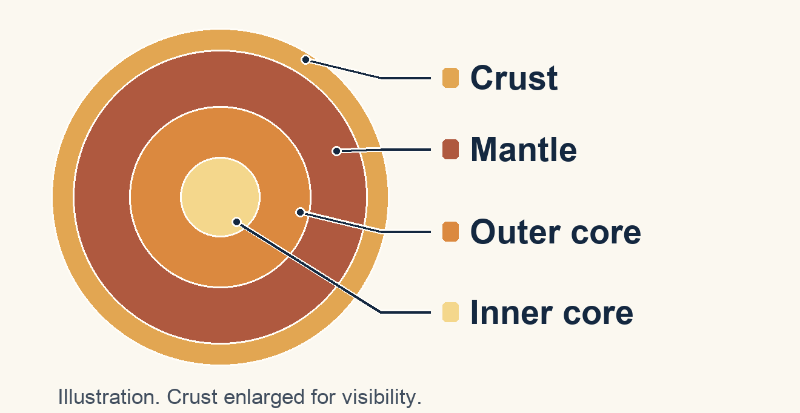

Year 8 Science
Start at Earth’s surface and trace the layers down to its centre.

Identify the four layers, compare their thickness and explain why the crust is so thin.
Trace how rocks form and investigate the 3D rock cycle.